解压版:https://dev.mysql.com/downloads/windows/installer/5.6.html
第一步:
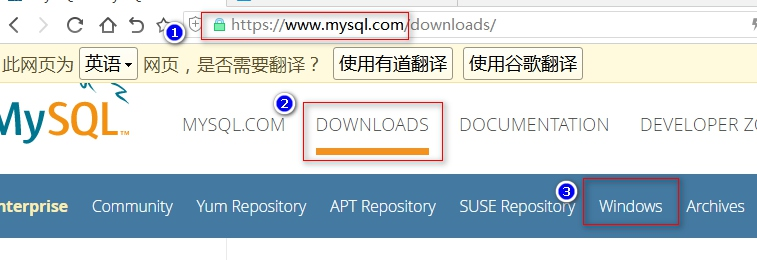第二步
第三步
第四步:是下载解压版本
如果想下载安装版本,第四步页面上方点有张图片, 点击进去就能下载安装版
第一步,同意协议
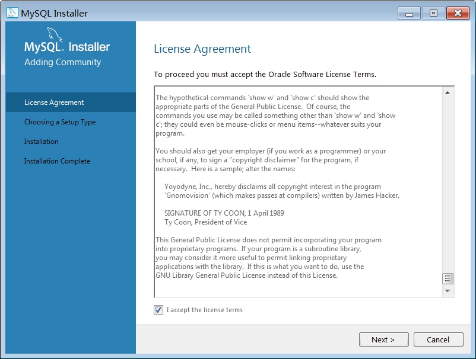 下一步:选择安装模式(注意,建议用开发人员默认配置,但我电脑配置有点差,硬盘空间小,所以最后用了最小模式) 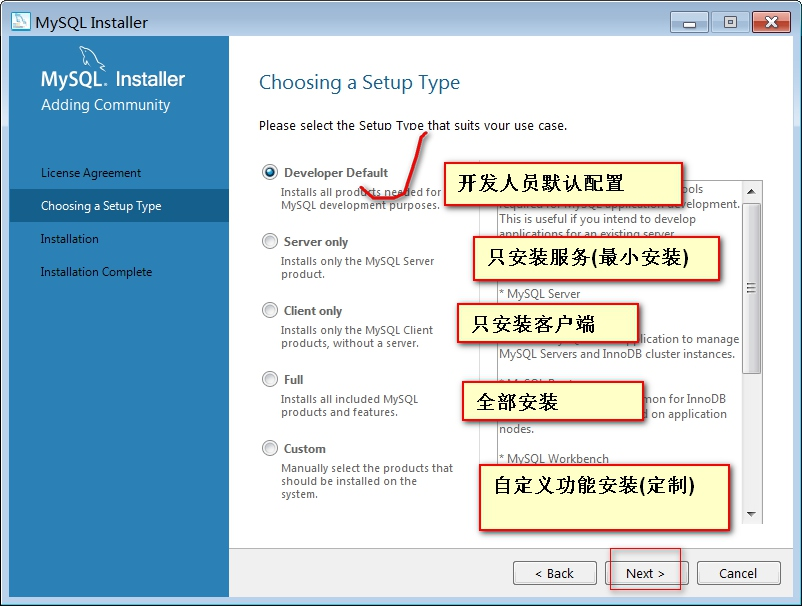 下一步:选择安装目录与数据库存放目录,如果提示支 插件什么的,就必先安装好. 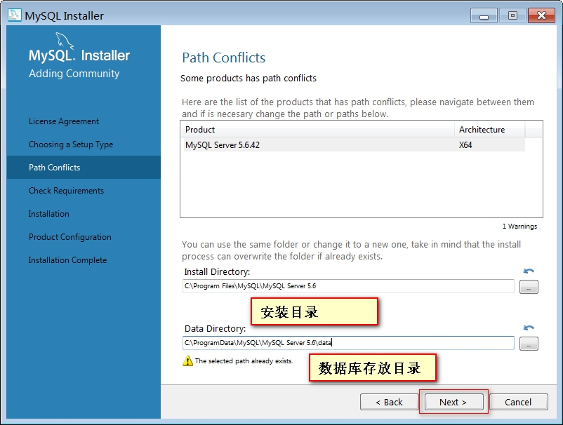 下一步:检查安装条件 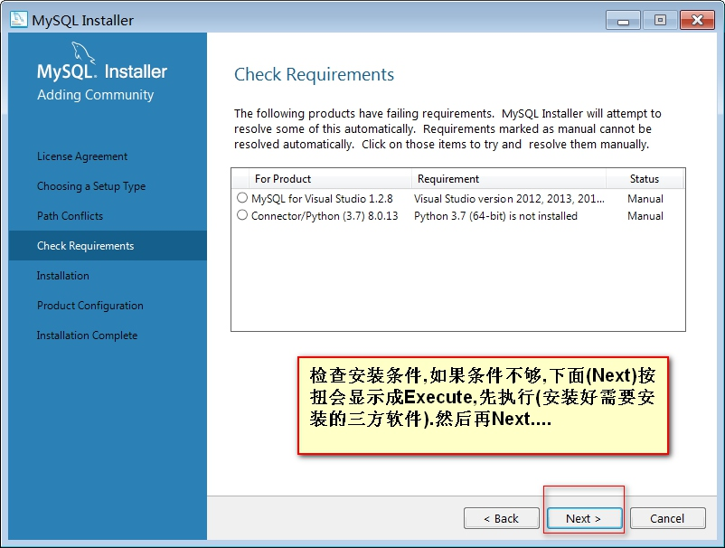 下一步:需安装的软件列表 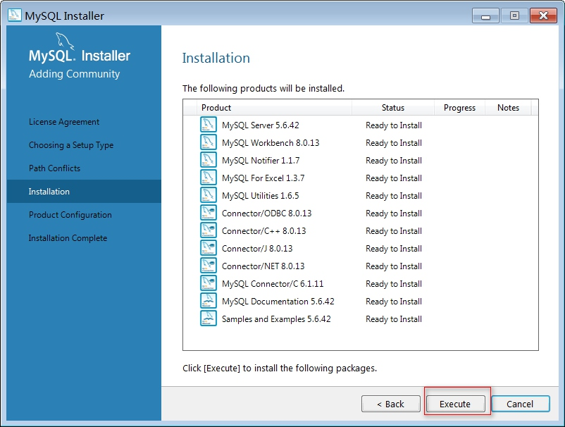 执行安装(Execute):等安装完成,开始配置[核心,重点] 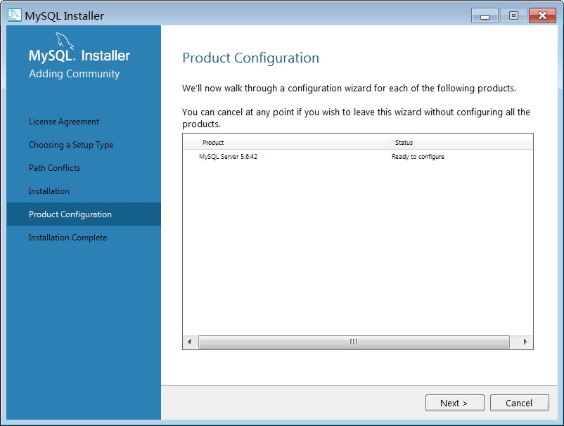 安装配置[重要] 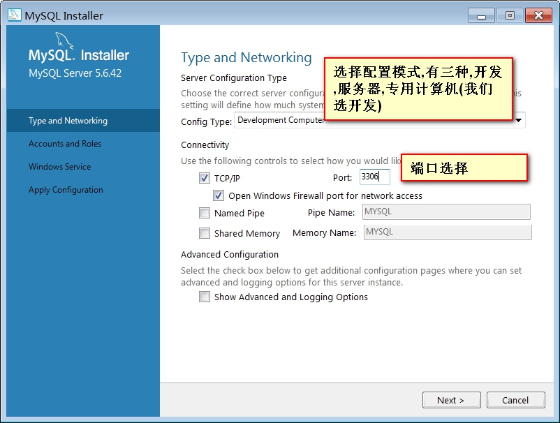 设置管理员密码,我们用:root 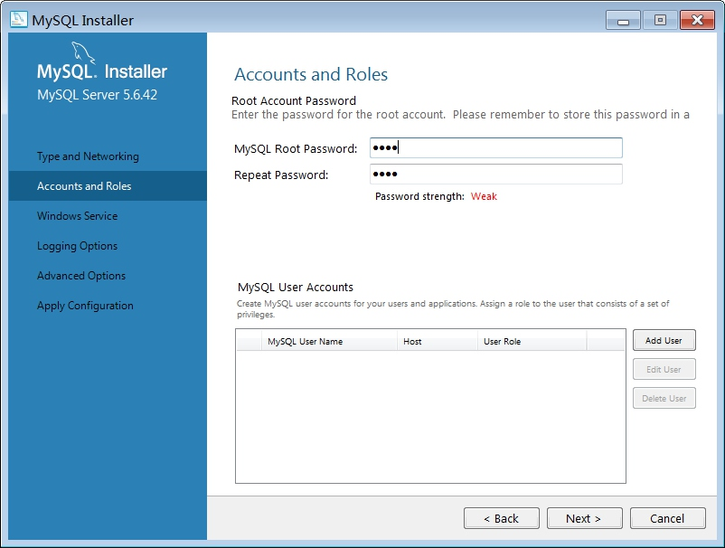 设置服务名 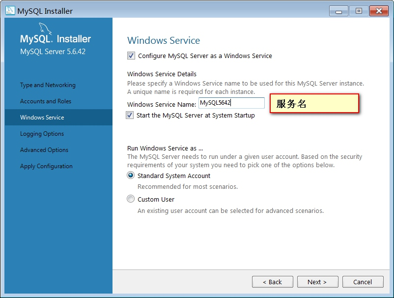 执行配置安装,等待完成,注意看别出错...最后完成 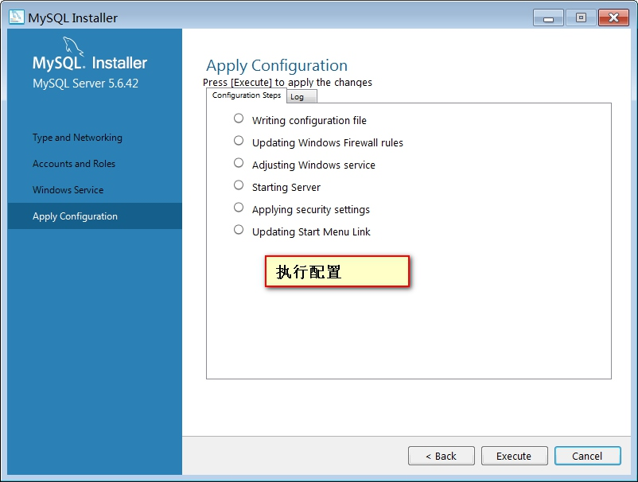1.以管理员身份打开DOS窗口（避免权限不足）.
2.进入到指定文件夹下:cd /d D:\mysql-5.6.39-winx64\bin
3.在DOS中输出:mysqld -install MySQL5.6,出现:Service successfully installed.则成功安装.
注意:如果是安装5.7以上版本,记得初始化(对于Mysql 5.7.6以后的5.7系列版本，Mysql使用mysqld --initialize或mysqld --initialize-insecure命令来初始化数据库，后者可以不生成随机密码。但是安装Mysql时默认使用的是前一个命令，这个命令也会生成一个随机密码。改密码保存在了Mysql的日志文件中。).
4.以后想卸载也很方便:用DOS命令:sc delete MySQL5.6或mysqld -remove Mysql5.6来卸载mysql服务后,删除文件即可.卸载前记得停止服务.
# 解压路径中尽量不要用空格,中文,万一有空格有中文,用双引号包起来.
cd /d D:\phpserver\mysql-5.6.42-winx64\bin
# 执行安装 如果提示:Service successfully installed.则安装成功
mysqld -install # 也可以指定服务名mysqld -install mysql5.6
# 如果想指定配置文件路径，则用--defaults-file参数指定
D:\phpservers\mysql-5.6.42-winx64\bin\mysqld.exe --defaults-file=D:\phpservers\mysql-5.6.42-winx64\my.ini mysql5642
# 启动服务,如果你的服务名不是mysql5.6则自己进服务中找找.
net start mysql5.6
# 如果服务不想要,也可以删除 1.用sc delete mysql5.6 2. 用 mysqld -remove mysql5.6
5.给大家一份配置文件(my.ini),是PHP5.6.42安装版自动生成的,修改了部分路径.
[client]
# pipe=
socket=MYSQL5.6
port=3309
[mysql]
no-beep
# default-character-set=
# SERVER SECTION
# ----------------------------------------------------------------------
#
# The following options will be read by the MySQL Server. Make sure that
# you have installed the server correctly (see above) so it reads this
# file.
#
# server_type=3
[mysqld]
# The next three options are mutually exclusive to SERVER_PORT below.
# skip-networking
enable-named-pipe
shared-memory
shared-memory-base-name=MYSQL5.6
# The Pipe the MySQL Server will use
socket=MYSQL5.6
# The TCP/IP Port the MySQL Server will listen on
port=3309
# Path to installation directory. All paths are usually resolved relative to this.
# basedir="C:/Program Files/MySQL/MySQL Server 5.6/"
# Path to the database root
datadir=D:/phpserver/mysql-5.6.42-winx64/data
# The default character set that will be used when a new schema or table is
# created and no character set is defined
# character-set-server=
# The default storage engine that will be used when create new tables when
default-storage-engine=INNODB
# Set the SQL mode to strict
sql-mode="STRICT_TRANS_TABLES,NO_AUTO_CREATE_USER,NO_ENGINE_SUBSTITUTION"
# General and Slow logging.
log-output=FILE
general-log=0
general_log_file="HUODEMING.log"
slow-query-log=1
slow_query_log_file="HUODEMING-slow.log"
long_query_time=10
# Binary Logging.
# log-bin
# Error Logging.
log-error="HUODEMING.err"
# Server Id.
server-id=1
# Specifies the on how table names are stored in the metadata.
# If set to 0, will throw an error on case-insensitive operative systems
# If set to 1, table names are stored in lowercase on disk and comparisons are not case sensitive.
# If set to 2, table names are stored as given but compared in lowercase.
# This option also applies to database names and table aliases.
lower_case_table_names=1
# Secure File Priv.注意此路径,1.创建下面路径,2.注释下面这行
secure-file-priv="D:/phpserver/mysql-5.6.42-winx64/data/Uploads"
# The maximum amount of concurrent sessions the MySQL server will
# allow. One of these connections will be reserved for a user with
# SUPER privileges to allow the administrator to login even if the
# connection limit has been reached.
max_connections=151
# Query cache is used to cache SELECT results and later return them
# without actual executing the same query once again. Having the query
# cache enabled may result in significant speed improvements, if your
# have a lot of identical queries and rarely changing tables. See the
# "Qcache_lowmem_prunes" status variable to check if the current value
# is high enough for your load.
# Note: In case your tables change very often or if your queries are
# textually different every time, the query cache may result in a
# slowdown instead of a performance improvement.
query_cache_size=1M
# The number of open tables for all threads. Increasing this value
# increases the number of file descriptors that mysqld requires.
# Therefore you have to make sure to set the amount of open files
# allowed to at least 4096 in the variable "open-files-limit" in
# section [mysqld_safe]
table_open_cache=
# Maximum size for internal (in-memory) temporary tables. If a table
# grows larger than this value, it is automatically converted to disk
# based table This limitation is for a single table. There can be many
# of them.
tmp_table_size=41M
# How many threads we should keep in a cache for reuse. When a client
# disconnects, the client's threads are put in the cache if there aren't
# more than thread_cache_size threads from before. This greatly reduces
# the amount of thread creations needed if you have a lot of new
# connections. (Normally this doesn't give a notable performance
# improvement if you have a good thread implementation.)
thread_cache_size=10
#*** MyISAM Specific options
# The maximum size of the temporary file MySQL is allowed to use while
# recreating the index (during REPAIR, ALTER TABLE or LOAD DATA INFILE.
# If the file-size would be bigger than this, the index will be created
# through the key cache (which is slower).
myisam_max_sort_file_size=100G
# If the temporary file used for fast index creation would be bigger
# than using the key cache by the amount specified here, then prefer the
# key cache method. This is mainly used to force long character keys in
# large tables to use the slower key cache method to create the index.
myisam_sort_buffer_size=73M
# Size of the Key Buffer, used to cache index blocks for MyISAM tables.
# Do not set it larger than 30% of your available memory, as some memory
# is also required by the OS to cache rows. Even if you're not using
# MyISAM tables, you should still set it to 8-64M as it will also be
# used for internal temporary disk tables.
key_buffer_size=8M
# Size of the buffer used for doing full table scans of MyISAM tables.
# Allocated per thread, if a full scan is needed.
read_buffer_size=64K
read_rnd_buffer_size=256K
#*** INNODB Specific options ***
# innodb_data_home_dir=
# Use this option if you have a MySQL server with InnoDB support enabled
# but you do not plan to use it. This will save memory and disk space
# and speed up some things.
# skip-innodb
# Additional memory pool that is used by InnoDB to store metadata
# information. If InnoDB requires more memory for this purpose it will
# start to allocate it from the OS. As this is fast enough on most
# recent operating systems, you normally do not need to change this
# value. SHOW INNODB STATUS will display the current amount used.
innodb_additional_mem_pool_size=6M
# If set to 1, InnoDB will flush (fsync) the transaction logs to the
# disk at each commit, which offers full ACID behavior. If you are
# willing to compromise this safety, and you are running small
# transactions, you may set this to 0 or 2 to reduce disk I/O to the
# logs. Value 0 means that the log is only written to the log file and
# the log file flushed to disk approximately once per second. Value 2
# means the log is written to the log file at each commit, but the log
# file is only flushed to disk approximately once per second.
innodb_flush_log_at_trx_commit=1
# The size of the buffer InnoDB uses for buffering log data. As soon as
# it is full, InnoDB will have to flush it to disk. As it is flushed
# once per second anyway, it does not make sense to have it very large
# (even with long transactions).
innodb_log_buffer_size=3M
# InnoDB, unlike MyISAM, uses a buffer pool to cache both indexes and
# row data. The bigger you set this the less disk I/O is needed to
# access data in tables. On a dedicated database server you may set this
# parameter up to 80% of the machine physical memory size. Do not set it
# too large, though, because competition of the physical memory may
# cause paging in the operating system. Note that on 32bit systems you
# might be limited to 2-3.5G of user level memory per process, so do not
# set it too high.
innodb_buffer_pool_size=247M
# Size of each log file in a log group. You should set the combined size
# of log files to about 25%-100% of your buffer pool size to avoid
# unneeded buffer pool flush activity on log file overwrite. However,
# note that a larger logfile size will increase the time needed for the
# recovery process.
innodb_log_file_size=48M
# Number of threads allowed inside the InnoDB kernel. The optimal value
# depends highly on the application, hardware as well as the OS
# scheduler properties. A too high value may lead to thread thrashing.
innodb_thread_concurrency=8
# The increment size (in MB) for extending the size of an auto-extend InnoDB system tablespace file when it becomes full.
innodb_autoextend_increment=64
# The number of regions that the InnoDB buffer pool is divided into.
# For systems with buffer pools in the multi-gigabyte range, dividing the buffer pool into separate instances can improve concurrency,
# by reducing contention as different threads read and write to cached pages.
innodb_buffer_pool_instances=8
# Determines the number of threads that can enter InnoDB concurrently.
innodb_concurrency_tickets=5000
# Specifies how long in milliseconds (ms) a block inserted into the old sublist must stay there after its first access before
# it can be moved to the new sublist.
innodb_old_blocks_time=1000
# It specifies the maximum number of .ibd files that MySQL can keep open at one time. The minimum value is 10.
innodb_open_files=300
# When this variable is enabled, InnoDB updates statistics during metadata statements.
innodb_stats_on_metadata=0
# When innodb_file_per_table is enabled (the default in 5.6.6 and higher), InnoDB stores the data and indexes for each newly created table
# in a separate .ibd file, rather than in the system tablespace.
innodb_file_per_table=1
# Use the following list of values: 0 for crc32, 1 for strict_crc32, 2 for innodb, 3 for strict_innodb, 4 for none, 5 for strict_none.
innodb_checksum_algorithm=0
# The number of outstanding connection requests MySQL can have.
# This option is useful when the main MySQL thread gets many connection requests in a very short time.
# It then takes some time (although very little) for the main thread to check the connection and start a new thread.
# The back_log value indicates how many requests can be stacked during this short time before MySQL momentarily
# stops answering new requests.
# You need to increase this only if you expect a large number of connections in a short period of time.
back_log=80
# If this is set to a nonzero value, all tables are closed every flush_time seconds to free up resources and
# synchronize unflushed data to disk.
# This option is best used only on systems with minimal resources.
flush_time=0
# The minimum size of the buffer that is used for plain index scans, range index scans, and joins that do not use
# indexes and thus perform full table scans.
join_buffer_size=256K
# The maximum size of one packet or any generated or intermediate string, or any parameter sent by the
# mysql_stmt_send_long_data() C API function.
max_allowed_packet=4M
# If more than this many successive connection requests from a host are interrupted without a successful connection,
# the server blocks that host from performing further connections.
max_connect_errors=100
# Changes the number of file descriptors available to mysqld.
# You should try increasing the value of this option if mysqld gives you the error "Too many open files".
open_files_limit=161
# Set the query cache type. 0 for OFF, 1 for ON and 2 for DEMAND.
query_cache_type=1
# If you see many sort_merge_passes per second in SHOW GLOBAL STATUS output, you can consider increasing the
# sort_buffer_size value to speed up ORDER BY or GROUP BY operations that cannot be improved with query optimization
# or improved indexing.
sort_buffer_size=256K
# The number of table definitions (from .frm files) that can be stored in the definition cache.
# If you use a large number of tables, you can create a large table definition cache to speed up opening of tables.
# The table definition cache takes less space and does not use file descriptors, unlike the normal table cache.
# The minimum and default values are both 400.
table_definition_cache=400
# Specify the maximum size of a row-based binary log event, in bytes.
# Rows are grouped into events smaller than this size if possible. The value should be a multiple of 256.
binlog_row_event_max_size=8K
# If the value of this variable is greater than 0, a replication slave synchronizes its master.info file to disk.
# (using fdatasync()) after every sync_master_info events.
sync_master_info=10000
# If the value of this variable is greater than 0, the MySQL server synchronizes its relay log to disk.
# (using fdatasync()) after every sync_relay_log writes to the relay log.
sync_relay_log=10000
# If the value of this variable is greater than 0, a replication slave synchronizes its relay-log.info file to disk.
# (using fdatasync()) after every sync_relay_log_info transactions.
sync_relay_log_info=10000
# Load mysql plugins at start."plugin_x ; plugin_y".
# plugin_load